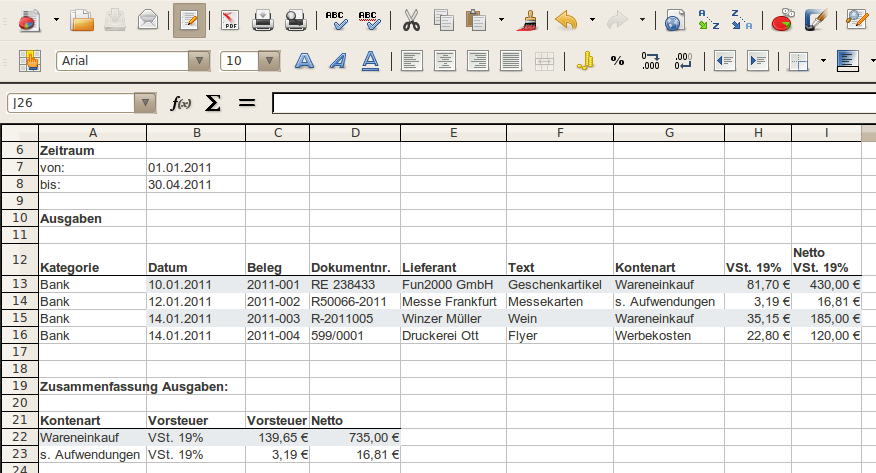
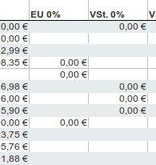
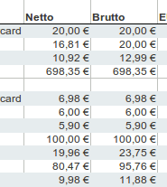

Exportiert eine Liste mit den Ausgaben (Ausgabebelege) in eine OpenOffice.org / LibreOffice Tabelle.
In einer ersten Tabelle werden alle Positionen der Ausgabebelege in eine Zeile eingetragen. Für jeden Steuersatz ist eine eigene Spalte vorgesehen.
In einer zweiten Tabelle werden die Ausgaben der Kontenart zusammengefasst ausgegeben.
Spalten mit 0% MwSt. enthalten grundsätzlich immer den Wert 0,00€. Diese können ausgeblendet werden, um die Übersichtlichkeit zu erhöhen.
Legt fest, ob die eine zusätzliche Spalte mit der Summe der Ausgaben angezeigt wird.
Siehe auch Einstellungen Export